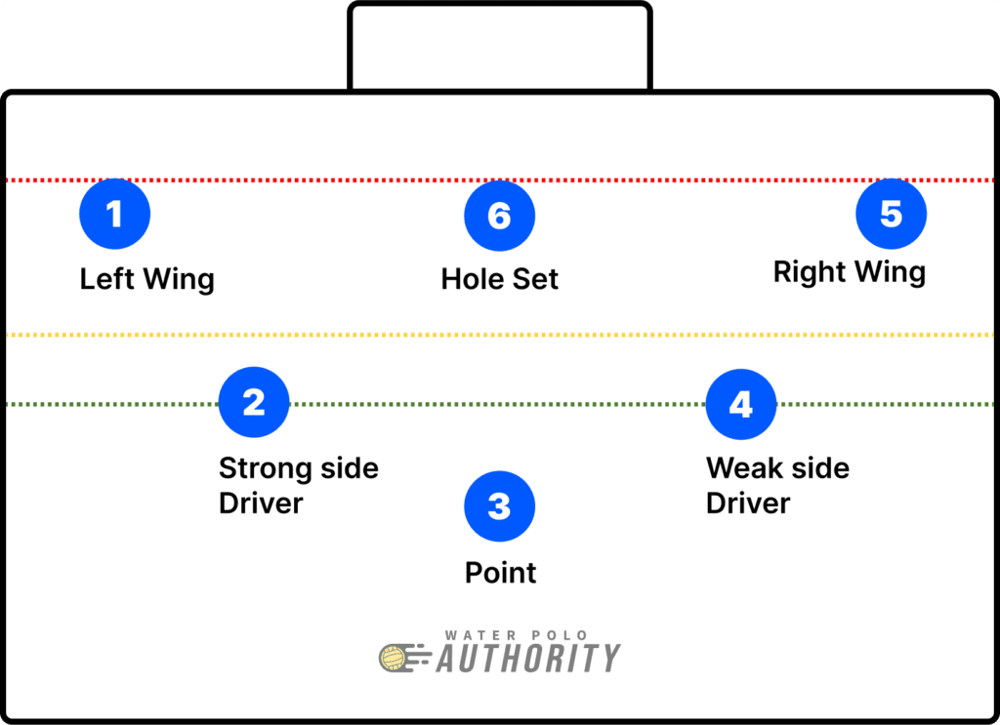

O "Maré de talentos" é uma programa que oferece clínicas gratuitas focadas em esportes aquáticos, com ênfase no polo aquático. Nosso objetivo é promover o desenvolvimento físico e emocional de crianças e adolescentes, oferecendo treinamento especializado em técnicas esportivas, além de incentivar o trabalho em equipe, a disciplina e o respeito. Com uma equipe de treinadores qualificados, buscamos proporcionar um ambiente seguro e motivador, onde os jovens possam descobrir seu potencial atlético, melhorar sua saúde e, ao mesmo tempo, se divertir. Nosso compromisso é democratizar o acesso ao polo aquático e aos benefícios dos esportes aquáticos para todos, independentemente da condição socioeconômica.
"O polo aquático é um esporte coletivo jogado dentro de uma piscina, que mistura elementos da natação, do handebol e até do futebol. É um jogo super dinâmico, físico e estratégico. São dois times com sete jogadores cada, e o objetivo é simples: fazer gols jogando uma bola dentro do gol adversário, tudo isso enquanto se nada e se mantém flutuando o tempo todo, sem encostar o pé no chão. Cada partida dura em média uma hora, os atletas precisam ter muita resistência, já que ficam o tempo todo em movimento dentro da água e com contato constante com os adversários." Como técnico, eu diria que o polo aquático exige trabalho em equipe, raciocínio rápido e muito preparo físico. É um jogo emocionante, tanto de jogar quanto de assistir!
Duração: 4 tempos de 8 minutos cada (tempo "parado" quando o jogo é interrompido) Tamanho da piscina: cerca de 25m x 20m (homens) e 25m x 17m (mulheres) Número de jogadores: 7 por time em campo (1 goleiro + 6 de linha), com até 6 reservas Tempo de ataque: o time tem 25 segundos para tentar finalizar a jogada Faltas comuns: segurar o adversário, puxar o maiô, afundar a bola, empurrar — isso dá posse de bola ao outro time ou, se for grave, expulsão temporária
Num ataque tradicional, usamos o que chamamos de formação "3-3":  1, 2, 4 e 5: atacantes; 6: centro (como se fosse um "pivô"); 3: Marcador de centro Goleiro: fica no gol o tempo todo e é o único que pode usar as duas mãos para pegar a bola
Os jogadores nadam de 2 a 4 km por jogo! Os árbitros apitam direto — o jogo é rápido e físico O Brasil já teve bons resultados internacionais, com destaque nas Olimpíadas de 2016 (equipe masculina) A técnica mais usada para flutuar é o "eggbeater", um movimento alternado com as pernas parecido com um batedor de ovos (por isso o nome) O polo aquático é um dos esportes olímpicos mais antigos, estreando em 1900 (para homens) e em 2000 (para mulheres)
Quer fazer parte do time MARÉ de Talentos? Entre em contato ou participe dos treinos!